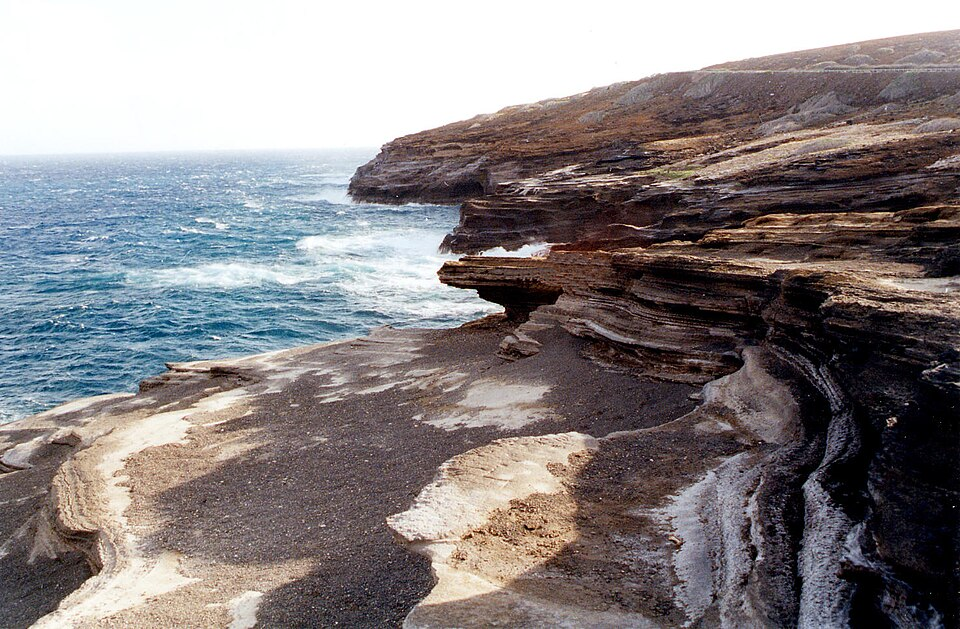

Kaʻiwi Channel
Place: Kaʻiwi Channel, between Oʻahu and Molokaʻi
Type: Ocean channel / traditional voyaging route
Namesake: Kaʻiwi (“the bone”), reflecting the channel's long and deadly history of claiming the lives of those attempting the crossing
Story it tells: A dangerous open-ocean passage that connected Hawaiian communities for generations and remains a test of paddling and swimming endurance.

Kaʻiwi Channel means “the bone,” a name associated with the dangerous waters separating Oʻahu and Molokaʻi and the lives lost attempting to cross them. Also sometimes called the Molokaʻi Channel, Kaʻiwi stretches roughly 26 miles between the islands and reaches depths of about 2,300 feet. Powerful trade winds, strong currents, and large open-ocean swells can turn the passage into one of Hawaiʻi's most demanding stretches of water.
For Native Hawaiians, however, Kaʻiwi was an ocean corridor. Canoes crossed the channel carrying people between Oʻahu and Molokaʻi to visit family, exchange resources, conduct diplomacy, and wage war. Crossing required knowledge of winds, currents, weather, and the coastlines on either side.
The channel also became a route for some of the largest military movements in Hawaiian history. During the eighteenth century, fleets crossed Kaʻiwi as Maui and Oʻahu's chiefs fought for control of the islands. In 1795, Kamehameha I assembled an enormous invasion force on Molokaʻi before crossing Kaʻiwi and landing on Oʻahu. The campaign culminated in the Battle of Nuʻuanu and Kamehameha's conquest of the island.
The same conditions that challenged Hawaiian voyagers continue to define Kaʻiwi today. Trade winds accelerate through the gap between the islands while currents and ocean swells can create rough and unpredictable seas.
In the twentieth century, crossing Kaʻiwi took on a new meaning. In 1952, Albert “Toots” Minvielle helped organize the first Molokaʻi Hoe, an outrigger canoe race across the channel. Early crews paddled the entire crossing without relief, while the modern race uses larger teams and escort boats that allow paddlers to change during the journey. The event grew into one of the world's best-known long-distance outrigger canoe races, drawing crews from across the Pacific.
Kaʻiwi has become a proving ground for other ocean athletes as well. Paddleboarders race from Molokaʻi to Oʻahu, while marathon swimmers attempt the channel as part of the Oceans Seven, a collection of major open-water crossings around the world.
Kaʻiwi remains what it has long been: both separation and connection. The 26 miles between Molokaʻi and Oʻahu have carried voyagers, warriors, families, paddlers, and swimmers across centuries. Its name, “the bone,” preserves the danger associated with the passage, while every successful crossing continues a much older Hawaiian understanding of the ocean not as the edge of the islands, but as the pathway between them.